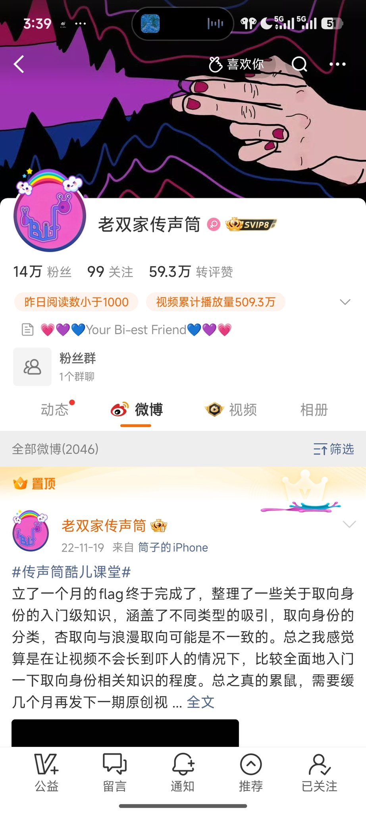

@go1415926 顺带说一嘴，跟着amber了解跨儿社群，那真是完蛋了，建议你去去看看引用你推文，给你做科普那位的推文，先多闭嘴多了解了解跨儿社群吧，还有给你推一位微博性少数科普博主，叫「老双家的传声筒」，你的一些矛盾点能在这里找到答案


//“女性的定义可能并不只是染色体和外在性征”，这看起来是一种包容的表达，其实仍然是生理中心的：这种表达的意思是，首先通过染色体和性征来鉴女，然后加以补充。在这样的讨论中，显然（即便是SRS、切胸术后的）跨性别男性（也）会被视为女性。 https://t.co/i0NhqACVEt